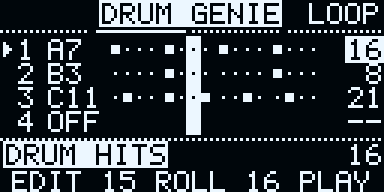

Sequence
Fresh scale-aware phrases up to 128 steps. Use Pad 15 for the piano roll and edit individual note lengths on either Suite build. Press Pad 11 to bounce.
FOR THE ROLAND SP-404MKII
Generate phrases, play them through your own sounds, and bounce straight to a pad.
Explore BounceSYSTEM UPDATE
Pick a preset or choose your firmware modules. Load your Roland 5.52 APP1 to build it in your browser.
Drop balls onto scale notes in BOX or send them through PLINKO. Catch the last bar as an editable Genie phrase, or record one bar straight to a sample pad.
On either Genie Suite build, press Pad 15 twice from Sequence Setup, then Pad 5.
Eight drum lanes run alongside your melody. Scroll the lane selector to see lanes 1–4 or 5–8. Audition a sample with SUB PAD and queue drum edits for the next phrase while your current groove plays.
From Sequence Setup, press Pad 15 twice, then Pad 3. Available in both Genie Suite builds.
Read the Drum Genie controls
Back up your projects. Copy the generated APP1 and original Roland 5.52 APP0 to the root of your update SD card.
Insert the card, hold SHIFT while powering on, then press VALUE. Wait for UPDATE COMPLETE! before powering off and removing the card.
Press SHIFT + RECORD SETTING to open Sound Generator, then SHIFT + SUB PAD for Genie. Press Pad 16 to play.
Fresh scale-aware phrases up to 128 steps. Use Pad 15 for the piano roll and edit individual note lengths on either Suite build. Press Pad 11 to bounce.
Build progressions from your phrase, choose a voicing, and set strum timing. Open with Modes → Pad 1.
Turn a source pad into a grain cloud. Open with Modes → Pad 2.
Open with Modes → Pad 3.
Turn a source pad into playable chops. Open with Modes → Pad 4.
Play a physics sequencer and catch its notes as a phrase. Open with Modes → Pad 5.
Hold SHIFT + Pad 9 to scramble unlocked rhythm, pitch, or velocity (turn CTRL 1 to set amount). Undo with SHIFT + Pad 13, redo with SHIFT + Pad 10.
Press SHIFT + Pad 14 in Genie to mirror the entire SP-404MKII OLED live over USB to the Windows viewer (.exe).
Both Genie Suite builds include the Modes page. From Sequence Setup, press Pad 15 twice to reach it. In Sequence Setup and Drum, hold SHIFT while turning CTRL 1–3 to edit settings. In Grain and Bounce, use the CTRL knobs directly.